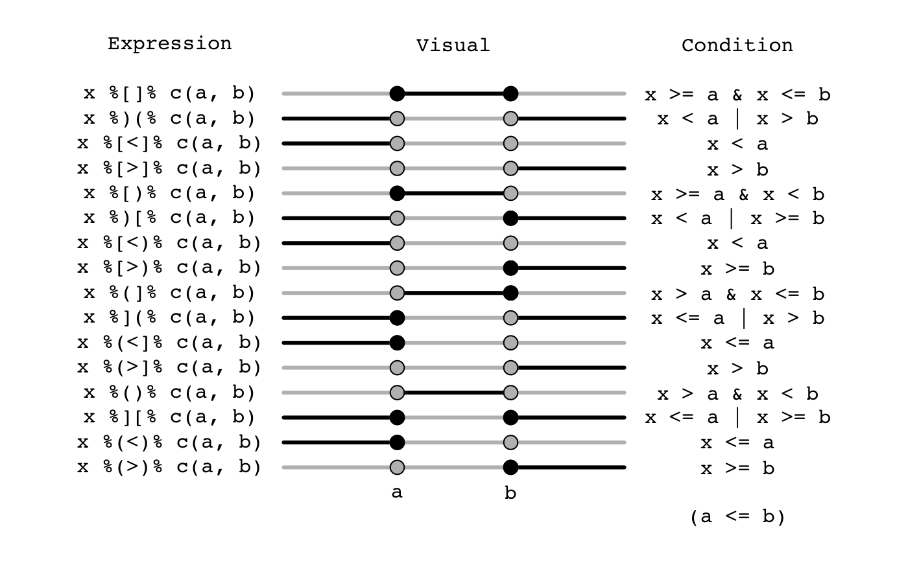
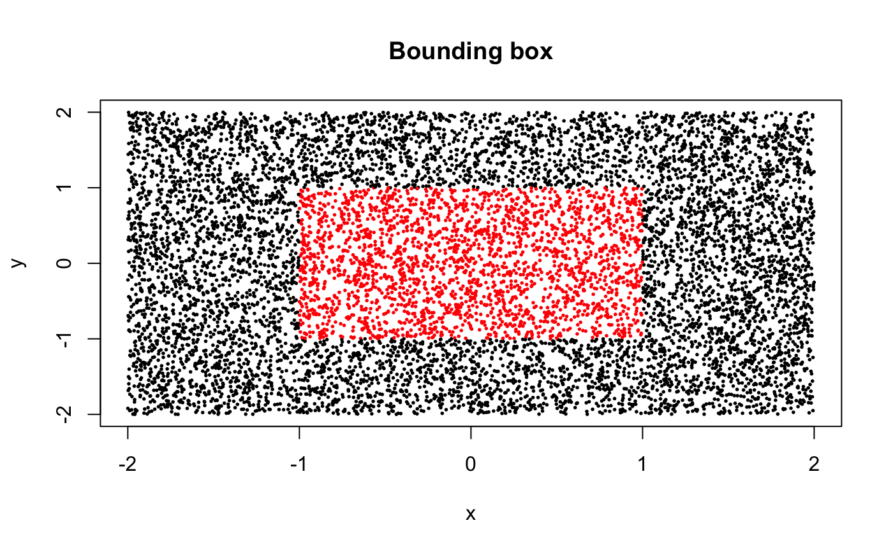
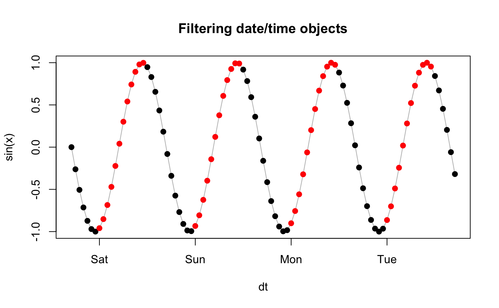

intrval.RdFunctions for evaluating if values of vectors are within intervals.
x %[]% interval x %)(% interval x %[<]% interval x %[>]% interval x %[)% interval x %)[% interval x %[<)% interval x %[>)% interval x %(]% interval x %](% interval x %(<]% interval x %(>]% interval x %()% interval x %][% interval x %(<)% interval x %(>)% interval intrval_types(type = NULL, plot = FALSE)
| x | vector or |
|---|---|
| interval | vector, 2-column matrix, list, or |
| type | character, type of operator for subsetting the results. The default |
| plot | logical, whether to plot the results, or print a table to the console instead. |
Values of x are compared to interval endpoints
a and b (a <= b).
Endpoints can be defined as a vector with two values
(c(a, b)): these values will be compared as a single
interval with each value in x.
If endpoints are stored in a matrix-like object or a list,
comparisons are made element-wise. If lengths do not match,
shorter objects are recycled.
These value-to-interval operators work for numeric (integer, real)
and ordered vectors, and object types which are measured at
least on ordinal scale (e.g. dates), see Examples.
Note: interval endpoints are sorted internally thus ensuring the condition
a <= b is not necessary.
The type argument or the specification of the special function
determines the open (( and )) or
closed ([ and ]) endpoints and relations.
There are four types of intervals ([], [), (], ()),
their negation ()(, )[, ](, ][, respectively),
less than ([<], [<), (<], (<)),
and greater than ([>], [>), (>], (>)) relations.
Note that some operators return identical results but
are syntactically different:
%[<]% and %[<)% both evaluate x < a;
%[>]% and %(>]% both evaluate x > b;
%(<]% and %(<)% evaluate x <= a;
%[>)% and %(>)% both evaluate x >= b.
This is so because we evaluate only one end of the interval
but still conceptually referring to the relationship
defined by the right-hand-side interval object
and given that a <= b.
This implies 2 conditional logical evaluations
instead of treating it as a single 3-level ordered factor.
A logical vector, indicating if x is in the specified interval.
Values are TRUE, FALSE, or NA
(when any of the 3 values (x or endpoints in interval)
are NA).
The helper function intrval_types
can be used to understand and visualize the operators' effects.
It returns a matrix explaining the properties of the operators.
See help page for relational operators: Comparison.
See %[o]% for relational operators for
interval-to-interval comparisons.
See factor for the behavior with factor arguments.
See also %in% for value matching
and %ni% for negated value matching
for factors.
See Syntax for operator precedence.
## motivating example from example(lm) ## Annette Dobson (1990) "An Introduction to Generalized Linear Models". ## Page 9: Plant Weight Data. ctl <- c(4.17,5.58,5.18,6.11,4.50,4.61,5.17,4.53,5.33,5.14) trt <- c(4.81,4.17,4.41,3.59,5.87,3.83,6.03,4.89,4.32,4.69) group <- gl(2, 10, 20, labels = c("Ctl","Trt")) weight <- c(ctl, trt) lm.D9 <- lm(weight ~ group) ## compare 95% confidence intervals with 0 (CI.D9 <- confint(lm.D9))#> 2.5 % 97.5 % #> (Intercept) 4.56934 5.4946602 #> groupTrt -1.02530 0.28330030 %[]% CI.D9#> (Intercept) groupTrt #> FALSE TRUE## comparing dates DATE <- as.Date(c("2000-01-01","2000-02-01", "2000-03-31")) DATE %[<]% as.Date(c("2000-01-151", "2000-03-15"))#> [1] TRUE FALSE FALSE#> [1] FALSE TRUE FALSE#> [1] FALSE FALSE TRUE#> x a b #> [1,] 4 1 3 #> [2,] 4 2 4 #> [3,] 4 3 5 #> [4,] 4 4 6 #> [5,] 4 5 7#> [1] FALSE TRUE TRUE TRUE FALSE#> [1] FALSE TRUE TRUE TRUE FALSE#> [1] FALSE TRUE TRUE TRUE FALSE## helper functions intrval_types() # print#> Expression Visual Condition #> %[]% x %[]% c(a, b) ---x===x--- x >= a & x <= b #> %)(% x %)(% c(a, b) ===o---o=== x < a | x > b #> %[<]% x %[<]% c(a, b) ===o---o--- x < a #> %[>]% x %[>]% c(a, b) ---o---o=== x > b #> %[)% x %[)% c(a, b) ---x===o--- x >= a & x < b #> %)[% x %)[% c(a, b) ===o---x=== x < a | x >= b #> %[<)% x %[<)% c(a, b) ===o---o--- x < a #> %[>)% x %[>)% c(a, b) ---o---x=== x >= b #> %(]% x %(]% c(a, b) ---o===x--- x > a & x <= b #> %](% x %](% c(a, b) ===x---o=== x <= a | x > b #> %(<]% x %(<]% c(a, b) ===x---o--- x <= a #> %(>]% x %(>]% c(a, b) ---o---o=== x > b #> %()% x %()% c(a, b) ---o===o--- x > a & x < b #> %][% x %][% c(a, b) ===x---x=== x <= a | x >= b #> %(<)% x %(<)% c(a, b) ===x---o--- x <= a #> %(>)% x %(>)% c(a, b) ---o---x=== x >= bintrval_types(plot = TRUE) # plot## graphical examples ## bounding box set.seed(1) n <- 10^4 x <- runif(n, -2, 2) y <- runif(n, -2, 2) iv1 <- x %[]% c(-1, 1) & y %[]% c(-1, 1) plot(x, y, pch = 19, cex = 0.25, col = iv1 + 1, main = "Bounding box")## time series filtering x <- seq(0, 4*24*60*60, 60*60) dt <- as.POSIXct(x, origin="2000-01-01 00:00:00") f <- as.POSIXlt(dt)$hour %[]% c(0, 11) plot(sin(x) ~ dt, type="l", col="grey", main = "Filtering date/time objects")#> [1] FALSE TRUE TRUE FALSE FALSE#> [1] 0 0 0 2 2#> [1] 2 0 0 0 0#> [1] 0 4 4 0 0